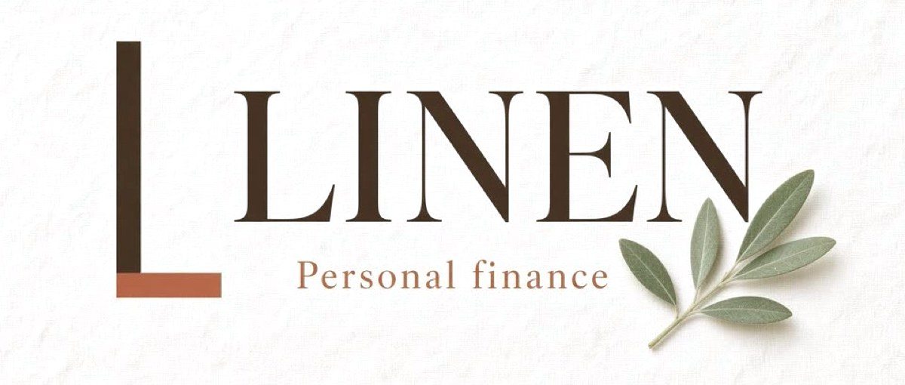

Try itAn app you own. No more monthly subscriptions or ads cluttering your experience. Make it fully yours. Connect it to Grok and you've got a personal finance coach. A seamless experience on a platform you control.
Clean screens, careful charts and real detail on every page: far more depth than the usual money app. Liněn was built with Grok and made to work with it, so Grok can read your numbers and explain them in plain words.
Tap around: Home, Activity, Budgets, Goals and Wealth.
The deepest page in the app: sleek charts that show where every goal stands today and project it forward, so you can see your progress over time and when you’ll get there.
Split a purchase across categories, set budgets that fit how you actually spend, and make merchant rules that file things for you. Flexible and detailed, but simple to find your way around and easy to manage.
He’s your coach inside Grok, so he can give simple coaching or deep financial analysis.
Installs on your phone like an app, straight from the browser, with a proper home-screen icon.
About half an hour, start to finish.
One payment of $50. No subscription, no ads, ever.
After checkout you get one message with your private download link. Paste it into Grok: it downloads Liněn, sets it up and puts it online on your own free Vercel account, behind a password you choose. No GitHub account needed.
Save it to your home screen. When you’re ready, Grok’s native connectors link your accounts through Plaid, and your real numbers appear.
A coach that reads your real numbers, and an app you change by asking.
Show moreShow lessMost finance apps are the same for everyone. Set up through Grok, Liněn is yours, and it has someone to talk to.
Marcus, your coach in Grok, looks at your actual balances and spending, not averages, and tells you what matters this week.
Ask “can I afford the trip in March?” or “why was September so high?” and get a straight answer.
“Add a goal for a new car.” “Make dining its own budget.” Grok makes the change for you.
Your coaching updates weekly, so the advice keeps up with your life.
Everyday questions, deeper analysis, and changes to the app itself.
Show moreShow lessGrok reads the app and your numbers, so you get real answers about your money. It looks; it never moves money.
The whole app, the one-paste setup, Marcus and a phone guide.
Show moreShow lessI spent 50+ hours and about $500 in AI token costs building Liněn: crafting it, refining it, chasing down bugs, adding features, and getting the look just right. Here’s what you get.
Home, Activity, Budgets, Goals and Wealth, with goal rings, split charges and category rules.
It installs everything, asks you a few questions, and puts the app online, password protected, on your own free account.
His goals and weekly notes live in one simple file that Grok can rewrite for you.
Step-by-step for iPhone and Android, so it sits on your home screen like any app.
Every screen, Marcus the coach, and guided setup with Grok.
Bank connections, and whether you need to be technical.
Show moreShow lessYes, when you’re ready. Grok’s native connectors link your accounts through Plaid, and Liněn reads your balances and transactions from there.
Do I need to be technical?No. You paste one message into Grok and it sets everything up and puts it online for you, free. You just answer a few questions.
TypeScript 5.9, React 19, TanStack Start 1.168 (Router, Query), Vite 8 with a Nitro server build, Tailwind CSS 4, Recharts 2 and Zustand 5.
Free on your own Vercel account (the Hobby plan, which allows personal use). Grok runs the build and deploy for you, the same way mine runs. Prefer Cloudflare? It also builds for Cloudflare Pages on the free plan, protected with Cloudflare Access (free for up to 50 users).
Private and password protected, and it works just like mine: a built-in login screen runs in front of every page and file. You choose the password and type it straight into Vercel’s settings, never into the chat. Log in once and your phone stays signed in for about a year. Until a password is set, the site stays locked rather than public.
Your numbers are in one file, my-snapshot.ts, on your computer (git-ignored) and on your own password-protected site. Budgets, category changes and rules are saved on your phone in local storage. No analytics; the only outside request is Google Fonts for the typefaces.
Grok’s native Finance connector links your banks, cards and brokerages through Plaid. When you say “sync,” Grok reads them (read-only, it never moves money), saves the results, and an import script merges them into my-snapshot.ts, keeping your history and updating balances. Then it rebuilds and redeploys. Weekly works well; it isn’t a live feed.
Marcus’s goals, plan and weekly notes live in coaching.json. Grok rewrites it from your numbers when you ask.
An installable web app (PWA) with a manifest and home-screen icons, set up with the iPhone (Safari) and Android (Chrome) guide. There’s no service worker, so it needs a connection to open; once open, the last snapshot is kept on the phone.
After checkout you get one message to paste into Grok, with a private download link (a zip). Grok fetches it, sets it up and deploys it to your own Vercel site. No GitHub account needed; a GitHub invite is available if you’d rather work from the repository. Your copy is yours after that: changes reach your phone when Grok rebuilds and redeploys, and you close and reopen the app to see them.
45 unit tests cover splits, category rules, undo, label precedence, goals and the password login (npm test).
Back up my-snapshot.ts and the finance-import folder; those are your data. Phone-only settings stay on that phone, with no export button yet.
Personal or single-project use. Change anything you like; just don’t resell or redistribute it.